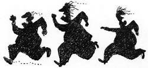
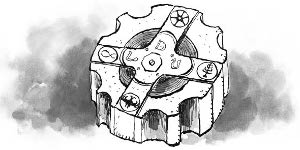

Müzeyyen Babaanne,
— Size ne beyefendi!
— Hemen gızmayın hanımefendü, biz teklifimizi birazcık yükseltmeye geldiydik aslen.
Sırıtınca altın dişi iyice parıldadı.
— Biz, bu köşkü ne teklif ederseniz edin satmayacağız. Hatıralarımız var burada.
Çocuklar, ilk defa babaannelerini böyle sinirli görüyorlardı.
— Hanımefendü, memleket gayetten ilerliyor, sen ne gaden dirensen de buralara apartumanlar dikilecek. Bırak da bu Haşmet gulunuz diksin apartumanı. Madem haturatunuz var, onlar için de ekistra bişiler öderiz artık, de mi yiğitlerim?
Arkadaki adamlara döndü, onlar da sırıtmaya başladılar.
— Oğlum, burada satılık bir şey yok. Lütfen gidiniz.
Erim, arkadaki iki adamın konuşmayı dinlemek yerine dikkatle elindeki kitaba baktıklarını fark etti. Bu sırada Cimbo da adamlara hırlamaya başladı.
— Gopek de arsız galiba, vahşi vahşi hırlıyor bakunsanuza!
Simin,
— “Gopek” değil, “köpek”. Çoğu insandan daha medenidir Cimbo, sadece hoşlanmadıklarına havlar!
Hepsi kahkahalarla güldü. Yaşından büyük bir laf etmişti ama çok da iyi olmuştu doğrusu. Nisan, Simin’in saçını okşadı ve kolunu omzuna attı.
— Hanumapla, iyi düşün bak, çok para viririm. Nasulsa her yer apartuman olacak. Şu ileride bir dükkân tuttum, fikriniz değişirse bana haber virin yeter. Zaten parasızlıktan, bakımsızlıktan dökülüyor köşkünüz. Üstünüze zelzele evi gibi yıkılmasın! Para, dert değil!
Müzeyyen Hanım,
— Lütfen bu bahçeyi terk ediniz evladım!
Rengi bembeyaz olmuştu. Tüm hayatı bu köşkte geçmişti. Şimdi birileri gelip sanki tüm gençliğini, hayatını, hatıralarını parayla silmek ister gibiydi.
Adamlar, bahçe kapusuna (kusura bakmayın, bu Haşmet’in konuşması beni de etkiledi) doğru yürürken Müzeyyen Babaanne,
— Para neye yarar ki oğlum?
Ahmet Tevfik’e dönerek,
— Düşünsene, sen bile bu köşkün bahçesinde Erdoğan’ımla büyümedin mi?
— Doğru, Müzeyyen Anne. Ne güzel günlerdi, az oynamadık buralarda. Hakkınızı hiçbir zaman ödeyemeyiz sizin.
Haşmet iki adamıyla bahçe kapısından çıkarken döndü:
— Yannız yinge o gopeği istemem apartmanı dikeceğimde ona göre!

O ana kadar sabreden Erim, zorlukla tuttuğu iri yarı bembeyaz Akbaş Cimbo’nun tasmasını bıraktı. Cimbo, tozu dumana katarak bahçe kapısına doğru koşmaya başladığında Haşmet’in “Allauah gapıyı örtüüün leynn...” diyerek göbeğinden beklenmedik bir hızla koştuğunu gördüler. Cimbo kapıya kadar koştu ve durmaksızın havladı. Erim izin vermezse bahçeden hiçbir zaman çıkmazdı. O sırada Haşmet Efendi her neyin üstüne bastıysa bir anda duvarın ardında havaya doğru kalkan iki yumurta topuklu ayakkabı gördüler. Ayakkabılardan biri fırladı ve dönerek bahçeye düştü, hemen ardından “Yandım anam!” diyen Haşmet’in sesi duyuldu. Cimbo fırladı, ayakkabıyı kaptı ve zafer kazanmış komutan edasıyla Erim’e getirdi. Haşmet’in iki adamı kapıda göründü; içeri girmiyorlardı, korkmuş da görünmüyorlardı. Erim yürüdü, kapının demir parmaklıklarının arasından ayakkabıyı uzattı. Ayakkabıyı alan adam dik dik Erim’in gözlerine baktı. Erim de gözlerini kaçırmadı, uzun uzun bakıştılar ta ki yanında buz gibi suratıyla duran diğer adam, arkadaşının omzuna vurana kadar. İkisi de pis pis gülerek yürüyüp gittiler.
Erim arkadaşlarının yanına geldi.
— Hadi bakalım, kitaba...
Ahmet Tevfik,
— Gençler, ben sizi alıp Gazi Mustafa Kemal’in Sultanahmet’te yapacağı konuşmaya götürmek için gelmiştim. “Harf İnkılabı”nı[8] açıklayacaktı bugün Gazi, biliyorsunuz. Ama göreviniz daha önemli görünüyor. Ben konuşmayı dinler, size dönüşte anlatırım. Müzeyyen Anne, yine rahatsız ederlerse haberim olsun, gerekeni yaparız!
Çocuklar el salladılar bisikletle uzaklaşan bu İstanbul beyefendisinin ardından.
— Ben bu keratayı çocukluğundan beri takım elbisesiz görmedim, biliyor musunuz canlarım?
Müzeyyen Babaanne gülümseyerek devam etti:
— Sağ olsun, bizi hiç yalnız bırakmadı.
Nisan kitabı eline aldı.
— Zafer yaz bakalım cümleyi, her sesin arasına çizgi koy ama... 3-1-a-ğ-a-s-n-a-d-l-o-s-9-a-y-ı-ğ-a-ş-a-n-a-d-ı-r-a-k-u-y-ı-r-a-v-u-d-l-a-m-i-ş.
— “Yıravudlamiş” ne demek azizim?
Nisan düşünceli bir ifadeyle,
— Bir şifre olmalı, birileri bulmasın diye Erdoğan Amca şifre koymuş. Bunları birleştirmeli, yerlerini değiştirmeliyiz.
Hepsi harflerle oynamaya başladı. Araya harfler eklediler; farklı yerlerden böldüler; ağa, ayı, aşan gibi kelimeler buldular. Sonunda Nisan, “Buldum!” dedi.
— Çok basit, tersten ve doğru yerlerden bölerek okuyun! “Şimal[9] / duvarı / yukarıdan / aşağıya / 9 / soldan / sağa / 13” yazıyor.
— Babaanne, hangisi şimal duvarı?
— Fırının sol tarafı yavrum.
Erim içeri tırmanmak üzereyken Sanem’in korku dolu çığlığını duydular:
— Aaa! Adama bakııın!
Hepsi Sanem’in baktığı tarafa doğru baktı. Ama kimseyi göremediler.
— Bir şey görünmüyor Sanem, dedi Zafer.
— Demin duvarın arkasından simsiyah bir adam bizi gözlüyordu. Çok korktum!
— Simsiyah mı?
— Evet, kömürden, kirden yüzü, elleri simsiyah olmuştu. Belki fırında yaşıyordu, biz yıkayınca kaçtı içinden.
— Yok artık! Zor bir gün ve gece geçirdik, belki zenci bir masal kahramanı görmüşsündür, dedi Zafer.
— Gerçekten gördüm. Duvarın üzerinden bizi dinliyordu, kaçtı.
Erim,
— Biz işimize dönelim, eğer varsa böyle biri Cimbo onu yakalar, Sanemciğim. Rahat ol.
Erim fırından içeri girdi. Nisan, Erim’in fırından dışarı uzanan eline gaz lambasını uzattı.
Erim dikkatlice kuzey duvarındaki tuğlaları önce soldan sağa saydı, sonra yukarıdan aşağı. Dokuzuncu taşı buldu. Taşı biraz zorladı ve yerinden oynadığını fark etti. Dışarıdan keski ve çekiç istedi.
Zafer,
— Ben getiririm babaanne.

Müzeyyen Babaanne gülümseyerek onayladı, evin her yerini Erim’den ve Müzeyyen Babaanne’den daha iyi bildiği için aksaya aksaya da olsa keski ve çekici getirdi. Erim, keskiyle taşın kenarındaki çimentoyu temizledi, taşı dışarı doğru yavaş yavaş çekip çıkardı. Elini karanlığa doğru uzattı, ince bir kiremide dokundu. Çıkarmak için çektiğinde oluşan aralığın yetersiz olduğunu fark etti. Biraz daha uğraşıp sağ ve soldaki taşları da yerinden çıkardı. Bir daha elini uzattı ve düz kiremit plakayı çekti. İdare lambasının ışığı kilden yapılmış tabletin üzerindeki yazıları aydınlattı. Elini bir daha içeri soktuğunda metal girintili yuvarlak bir maddeye dokundu, onu da tuttu ve çıkardı. Elini tekrar içeri soktuğunda ise bir şey bulamadı. Ardından, çıkardığı iki parçayı uzattı ve dışarı çıktı.